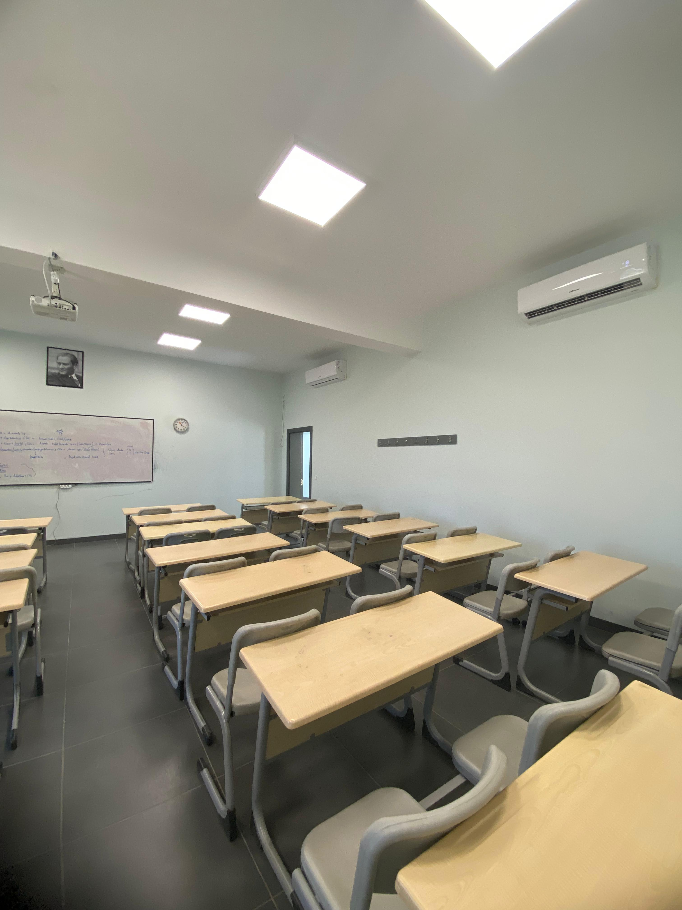
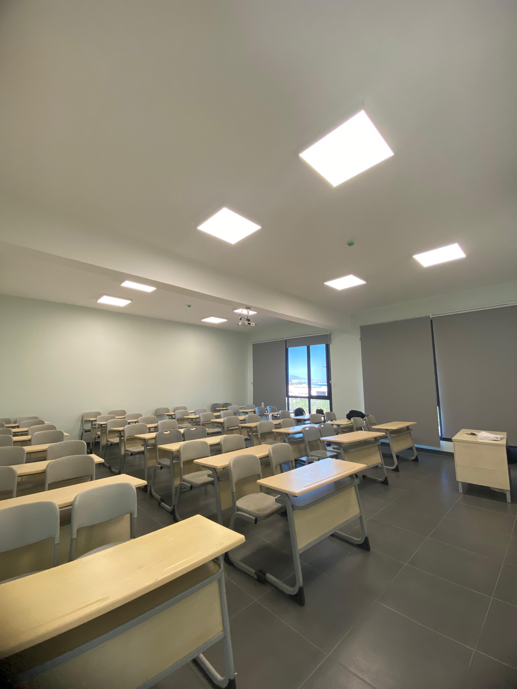

Tire Organize Sanayi Bölgesi Müdürlüğü ile Ege Üniversitesi Tire Kutsan Meslek Yüksekokulu arasında üniversite-sanayi iş birliği projeleri kapsamında uygulamalı eğitim ile nitelikli mezunlar yetiştirilmesini sağlayacak olan protokol imzalandı. İmza törenine EÜ Rektörü Prof. Dr. Necdet Budak, Tire Kaymakamı Fatih Çobanoğlu, Tire Kutsan Meslek Yüksekokulu Müdürü Doç. Dr. Nur Ceyhan Güvensen, TOSBİ Müteşebbis Heyeti Başkanı Metin Akdaş, Tire Organize Sanayi Bölgesi Yönetim Kurulu Başkanı Kosat Gürler katıldı.
İmza töreninde konuşan Rektör Prof. Dr. Necdet Budak, “Üniversite-Sanayi iş birliğini hayata geçiren bu protokol neticesinde oluşturulan model, bilim ile sanayicinin devletin koordinasyonunda hayata geçirdiği bölgemizde ve Türkiye’de ender modellerden birisi. Yükseköğretim Kurulumuz üniversite sanayi işbirliğini önemli ölçüde teşvik ediyor. Bu model ile sanayinin ara insan gücü gereksinimlerini maksimum düzeyde karşılayan nitelikli mezunlar yetiştirilecek. Nitekim sanayicinin ve ülkenin ara elemana çok ciddi derecede ihtiyacı var. Üniversite olarak meslek yüksekokullarımızdan mezun olan öğrencilerimizin hızla istihdamı sağlanıyor. Ege Üniversitesi akademik personeli ve öğrencilerinin TOSBİ’de hem akademik anlamda bir etkileşim içinde olacağına hem de öğrencilerimizin yüksek enerjisi ile laboratuvarlarda hocalarımızla birlikte özel sektörün talep ettiği analizleri yaparak maddi manevi anlamda çok ciddi katkılar sunacağına inanıyorum. Tam akredite bir araştırma üniversitesi olan Ege Üniversitesinin vizyonuna ve hedeflerine katkı sunan bu modelin, ilçelerdeki diğer meslek yüksekokullarına emsal teşkil etmesi açısından da oldukça önemsiyorum Bununla birlikte, sanayinin üniversite ile iç içe olmasını sağlayan dinamikleri hayata geçirmek, bu kapsamda nitelikli projeler ve bilimsel çalışmalar geliştirmek, sanayinin sorunlarına bilimsel çözümlerle destek sunmak, ülkemiz adına mesleki eğitim politikalarına yön veren dinamiklerin oluşmasına katkı sağlanabilecek. Ege Üniversitesi olarak topluma bu anlamda katkı sunabilmenin onurunu ve gururunu yaşıyorum. Bu protokolün oluşturulmasında emeği geçen başta Kaymakamız olmak üzere Müteşebbis Heyetimize ve TOSBİ Yönetim Kurulu Başkanımıza, akademisyenlerimize teşekkür ediyor, hayırlı olmasını temenni ediyorum” dedi.
Kaymakamı Fatih Çobanoğlu, “Bu projenin gerçekleşmesi için yaklaşık 3 yıldır gayret gösteriyoruz. Projemiz için gösterilen fedakârlıklarla bugün protokol aşamasına geldik. Özellikle Tire Organize Sanayi Bölgesi (TOSBİ) başta olmak üzere Müteşebbis Heyet Kurulu Başkanımızın ve Yönetim Kurulu Başkanımızın nezdinde emeği geçen herkese teşekkürlerimi sunuyorum. Çünkü onların desteği ve TOSBİ’nin bütçesi olmasa, bu projeyi gerçekleştiremezdik. Arazinin trampayla TOSBİ’ye kazandırılması, ardından binanın yapılması ve hem dünya hem de Türkiye ekonomisinin çalkantılı olduğu bir dönemde bu yükün sırtlanılması bizim için çok memnuniyet verici bir başarı. Burada kazan-kazan formülü işleyerek, hem sanayicilerimiz kalifiye eleman kazanmış olacak hem de Ege Üniversitesi Tire Kutsan Meslek Yüksekokulu’ndaki öğrencilerimiz yerinde staj yapma imkânı bulacak. Ayrıca mezun olan öğrencilerimize de istihdam sağlanmış olacak. Nihayetinde Ege Üniversitemiz de yeni bir bina kazanmış olacak. Dolayısıyla bütün paydaşların kazandığı güzel bir ortak girişim oldu. Destekleri için Ege Üniversitesi Rektörü Sayın Prof. Dr. Necdet Budak’a, Müteşebbis Heyet Kurulu Başkanımıza, Yönetim Kurulu Başkanımıza ayrı ayrı teşekkür ediyorum. Bu güzel projenin örnek olmasını ve Türkiye çapında yaygınlaşarak öğrencilerimize, istihdam olanaklarımıza ve sanayimize faydalı olmasını temenni ediyorum” dedi.
TOSBİ Müteşebbis Heyeti Başkanı Metin Akdaş, “Sanayimiz, başarı ivmesini yükseltebilmek için özellikle kalifiye elemana ihtiyaç duyuyor. Bu noktada projemiz ülkemizde örnek teşkil etmesini istediğimiz bir model ile üniversite-sanayi iş birliğini ortaya koyuyor. Bu iş birliği ile sanayimizin duyduğu kalifiye elaman ihtiyacı karşılanıyor. Ayrıca EÜ Tire Kutsan Meslek Yüksekokulu öğrencilerimiz de yerinde staj yapma imkânı bularak, istihdam edinme fırsatı yakalıyor. Hem sanayimize hem de gençlerimize fayda sağlayacak bu önemli projede emeği geçen Ege Üniversitesi Rektörü Prof. Dr. Necdet Budak’a, Kaymakamımıza, Yönetim Kurulu Başkanımıza çok teşekkür ediyorum” dedi.
Tire Kutsan Meslek Yüksekokulu Müdürü Doç. Dr. Nur Ceyhan Güvensen ise “Öncelikle projenin ilk yıllarından itibaren emeği geçen başta Prof. Dr. Necdet Budak hocama, İlçe Kaymakamımıza ve katkıda bulunan herkese teşekkür ederim. Protokol kapsamında tahsisatın tamamlanmasından sonra, öncelikle tam donanımlı gıda laboratuvarı ve daha sonra sanayicinin ihtiyaç duyduğu otomasyon sistemlerinde etkin elemanlar yetiştirilmesi üzere ilgili programın açılması sağlanacak. Gıda sektörünün ihtiyaçlarına cevap verecek nitelikte, gıda bilimi ve teknolojisi konusunda bilgi ve beceri sahibi; gıda maddelerinin sağlıklı olarak üretilmesi, muhafazası, ambalajlanması, depolanması ve servis edilmesi aşamalarında; gıda kalite kontrol laboratuvarlarında ve hizmetlerinde ara eleman olarak çalışabilecek Gıda Teknikeri yetiştirilecek” dedi

